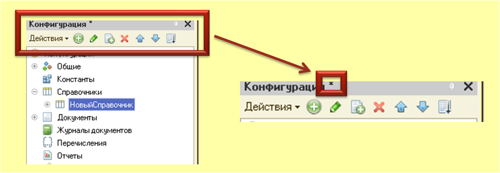
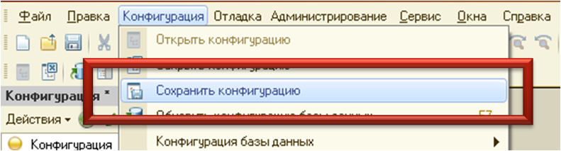
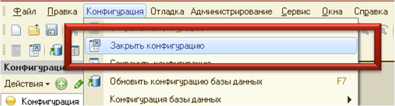
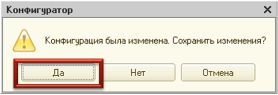
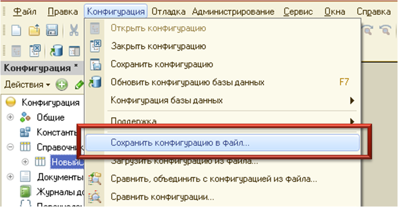
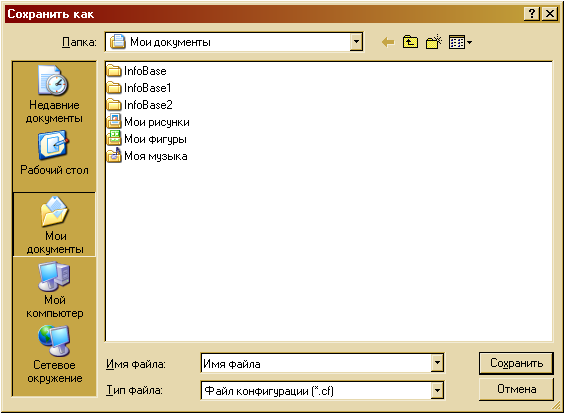
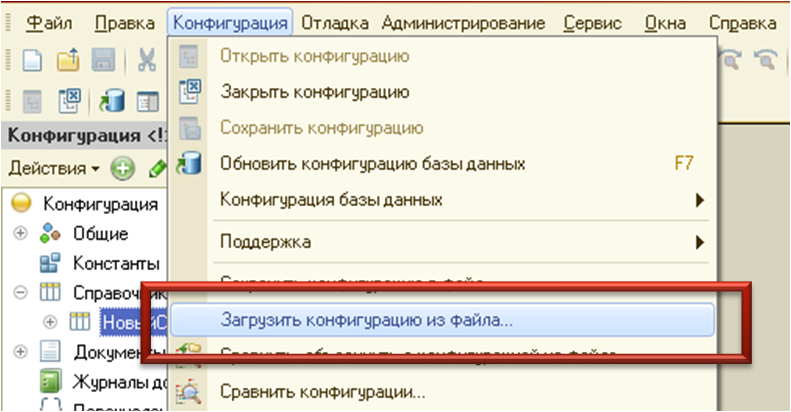

Сохранение конфигурации
В информационной базе системы "1С:Предприятие" хранятся две конфигурации:
- основная конфигурация (редактируемая, далее просто конфигурация);
- конфигурация базы данных
Конфигурация базы данных определяет структуру таблиц базы данных и всю функциональность, с которой работают пользователи. Основная конфигурация используется только для изменения. Это позволяет вносить и сохранять изменения в конфигурации в процессе работы пользователей. Произвести изменение в конфигурации базы данных в процессе работы пользователей нельзя.
В процессе редактирования конфигурации могут быть созданы новые, изменены существующие или удалены имеющиеся объекты, подчинённые объекты (формы, реквизиты и т.д.). Любое такое изменение приводит к модифицированности конфигурации. Признак модифицированности конфигурации "*" показывается в заголовке окна "Конфигурация", рис. 1.

Рис. 1. Изменённая конфигурация
Для сохранения конфигурации (без завершения работы с конфигурацией) нужно выбрать пункт "Конфигурация - Сохранить конфигурацию", рис. 2.

Рис. 2. Сохранение конфигурации
Пункт доступен, если конфигурация была изменена, в отличие от редакторов текстового, табличного и HTML - документов, для которых пункт доступен всегда.
Сохранение изменённой конфигурации возможно в любой момент времени, даже если запущен режим "1С:Предприятие" или производится отладка.
Закрытие конфигурации
Для закрытия конфигурации нужно выбрать пункт "Конфигурация - Закрыть конфигурацию", рис. 3.

Рис. 3. Закрытие конфигурации
При этом если конфигурация была модифицирована (были произведены изменения), то конфигурация выводит сообщение: "Конфигурация была изменена. Сохранить изменения?". Для сохранения внесённых изменений выбрать кнопку "Да", рис. 4.

Рис. 4. Подтверждение сохранения конфигурации
Закрытие конфигурации с соранением произведённы изменений возможно в любой момент времени, даже если запущен режим "1С:Предприятие" или производится отладка.
Сохранение конфигурации в файл
Для сохранения конфигурации в файл на диск нужно выбрать пункт "Конфигурация - Сохранить конфигурацию в файл", рис. 5.

Рис. 5. Сохранение конфигурации в файл
На экран выводится стандартный диалог выбора файла. Следует выбрать каталог и указать имя файла, в который будет записана конфигурация, рис. 6.

Рис. 6. Создание файла
Сохранённый файл конфигурации необходим для операции сравнения и объединения конфигураций
Если конфигурация стоит на поддержке, то в информационной базе всегда хранится конфигурация поставщика.
Загрузка конфигурации из файла
Для полной замены текущей конфигурации на конфигурацию, сохранённую в файле, нужно выбрать пункт "Конфигурация - Загрузить конфигурацию из файла", рис. 7.

Рис. 7. Загрузка конфигурации из файла
Практическое задание №1
Задание: Создайте новую конфигурацию, добавив в неё элементы из таблицы 1. Сохраните данную конфигурацию в файл с именем "ИнформационнаяБаза".

Таблица 1
| Элемент | Реквизиты | Табличные части | Формы |
|---|---|---|---|
| Справочники | Дата: Тип данных (Дата); Номер: Тип данных (Строка), Длина (10) |
Имя: Таблица Реквизиты: Номер (Строка, 10); Дата (Дата) |
ФормаЭлемента |
| Документы | ПолеВвода: Тип данных (Строка, 10) |
Практическое задание №2
Задание: Создайте новую конфигурацию и загрузите конфигурацию из файла с именем "ИнформационнаяБаза" в данную конфигурацию.